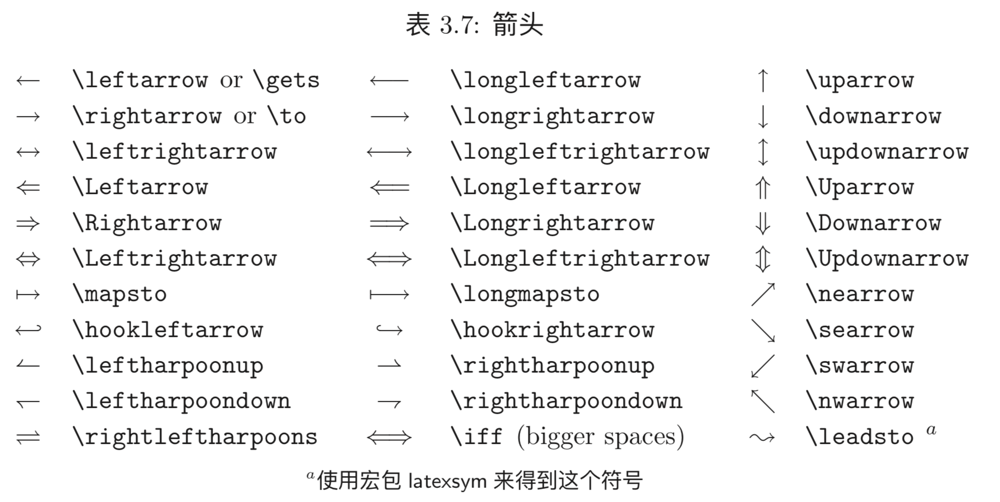
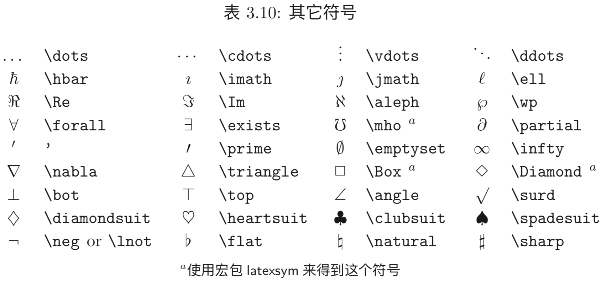
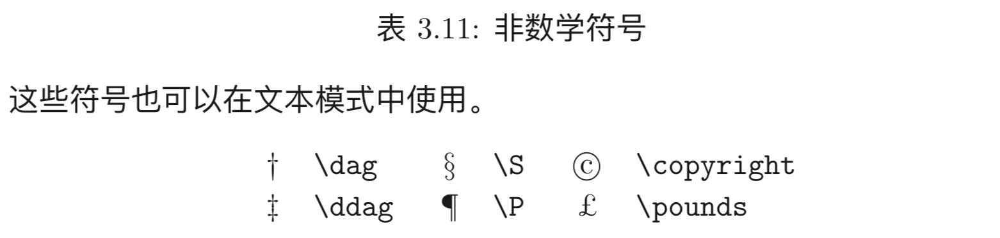

Hexo
- 创建Hexo工程
1 | $ hexo init blog |
此处blog可以替换成你想要的名字。
- 新建博文
1 | $ cd blog |
此时会在/blog/sources/_post/目录下生成’blog-name.md’文件和’blog-name’的文件夹。md文件用于编辑博文，文件夹用于存放此博文内容照片。
- 运行服务器
1 | $ hexo server |
本地访问http://0.0.0.0:4000/，查看Hexo网站。
- 生成上传至GitHub
1 | $ hexo clean |
- 安装主题
1 | $ cd /blog/themes |
然后修改站点配置文件/blog/config.yml，将其中的theme改成jacman
1 | theme: jacman |
- 插入图片
将照片放在与博文同名的文件夹下面，在博文中输入：
1 |  |
即可饮用，但是这种方法不能改变图片大小，可采用下面命令修改图片大小
1 | <img src='pic.png' width = '80%' height = '80%' > |
- 文件下载链接
在blog/sources/files内放入上传的文件，在博文中输入：
1 | [](/files/filename) |
LaTex公式编辑
- 插入数学公式
1 | $数学公式$ 或者 $$数学公式$$ |
前者是行内公式，后者是行间公式
- 区块引用
>后面书写引用
分割线
***或者---上下标
使用^表示上标，表示下标
1 | x^2 |
- 波浪线
1 | \sim |
- 公式换行对齐
1 | \begin{equation} |
- 括号
()和[]都表示它们自己，但是{}因为有特殊作用需要用\lbrace \rbrece表示。
- 分数
\frac{分母}{分子}来表示分数
- 开方
\sqrt[次数][被开方数]来表示开方
- 求期望
1 | \mathbb{E} |
- 正负无穷
1 | +\infty |
- 希腊字母
| 代码 | 大写 | 代码 | 小写 |
|---|---|---|---|
A |
$A$ | \alpha |
$\alpha$ |
B |
$B$ | \beta |
$\beta$ |
\Gamma |
$\Gamma$ | \gamma |
$\gamma$ |
\Delta |
$\Delta$ | \delta |
$\delta$ |
E |
$E$ | \epsilon |
$\epsilon$ |
Z |
$Z$ | \zeta |
$\zeta$ |
H |
$H$ | \eta |
$\eta$ |
\Theta |
$\Theta$ | \theta |
$\theta$ |
I |
$I$ | \iota |
$\iota$ |
K |
$K$ | \kappa |
$\kappa$ |
\Lambda |
$\Lambda$ | \lambda |
$\lambda$ |
M |
$M$ | \mu |
$\mu$ |
N |
$N$ | \nu |
$\nu$ |
\Xi |
$\Xi$ | \xi |
$\xi$ |
O |
$O$ | \omicron |
$\omicron$ |
\Pi |
$\Pi$ | \pi |
$\pi$ |
P |
$P$ | \rho |
$\rho$ |
\Sigma |
$\Sigma$ | \sigma |
$\sigma$ |
T |
$T$ | \tau |
$\tau$ |
\Upsilon |
$\Upsilon$ | \upsilon |
$\upsilon$ |
\Phi |
$\Phi$ | \phi |
$\phi$ |
X |
$X$ | \chi |
$\chi$ |
\Psi |
$\Psi$ | \psi |
$\psi$ |
\Omega |
$\Omega$ | \omega |
$\omega$ |
其他字符
- 关系运算符
| 符号 | 代码 |
| :—————: | :—————- |
| $\pm$ |\pm|
| $\times$ |\times|
| $\div$ |\div|
| $\mid$ |\mid|
| $\nmid$ |\nmid|
| $\cdot$ |\cdot|
| $\circ$ |\circ|
| $\ast$ |\ast|
| $\bigodot$ |\bigodot|
| $\bigotimes$ |\bigotimes|
| $\bigoplus$ |\bigoplus|
| $\leq$ |\leq|
| $\geq$ |\geq|
| $\neq$ |\neq|
| $\approx$ |\approx|
| $\equiv$ |\equiv|
| $\sum$ |\sum|
| $\prod$ |\prod|
| $\coprod$ |\coprod|- 集合运算符
| 符号 | 代码 |
| :————-: | :————— |
| $\emptyset$ |\emptyset|
| $\in$ |\in|
| $\notin$ |\notin|
| $\subset$ |\subset|
| $\supset$ |\supset|
| $\subseteq$ |\subseteq|
| $\supseteq$ |\supseteq|
| $\bigcap$ |\bigcap|
| $\bigcup$ |\bigcup|
| $\bigvee$ |\bigvee|
| $\bigwedge$ |\bigwedge|
| $\biguplus$ |\biguplus|
| $\bigsqcup$ |\bigsqcup|- 对数运算符
| 符号 | 代码 |
| :——: | :——- |
| $\log$ |\log|
| $\lg$ |\lg|
| $\ln$ |\ln|- 三角运算符
| 符号 | 代码 |
| :———: | :———- |
| $\bot$ |\bot|
| $\angle$ |\angle|
| $\sin$ |\sin|
| $\cos$ |\cos|
| $\tan$ |\tan|
| $\cot$ |\cot|
| $\sec$ |\sec|
| $\csc$ |\csc|- 微积分运算符
| 符号 | 代码 |
| :—————: | :—————- |
| $\prime$ |\prime|
| $\int$ |\int|
| $\iint$ |\iint|
| $\iiint$ |\iiint|
| $\iiiint$ |\iiiint|
| $\oint$ |\oint|
| $\lim$ |\lim|
| $\infty$ |\infty|
| $\nabla$ |\nabla|
| $\mathrm{d}$ |\mathrm{d}|- 箭头

- 不常用符号

- 非数学符号
